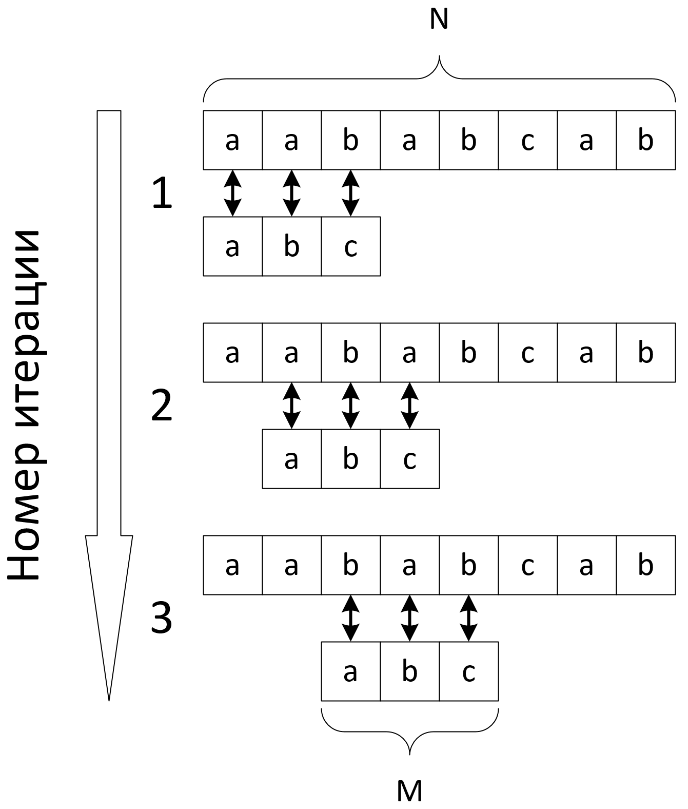
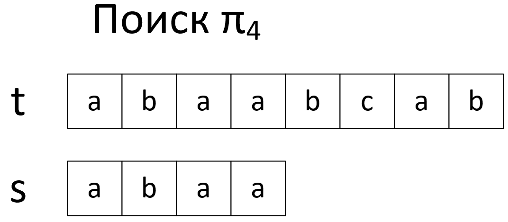
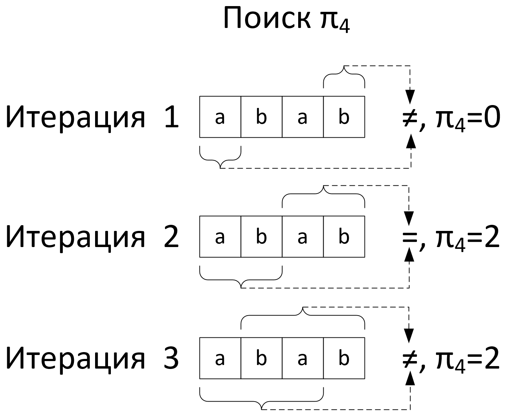
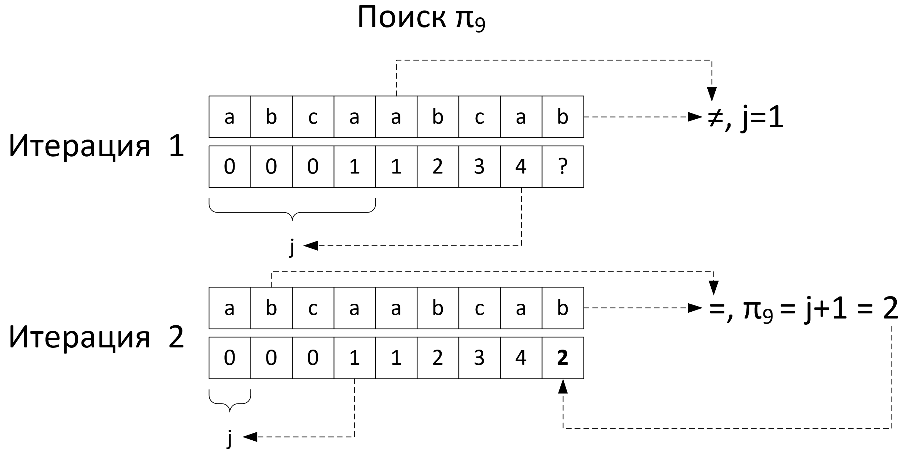

def substr(t, s):
N, M, p = len(t), len(s), []
for i in range(N - M + 1):
full_match = True
for j in range(M):
if t[i + j] != s[j]:
full_match = False
if full_match:
p.append(i)
return p

На сколько можно сдвинуть подстроку $s$ влево?
| $i=$ | $1$ | $2$ | $3$ | $4$ | $5$ | $6$ | $7$ |
|---|---|---|---|---|---|---|---|
| $t=$ | $a$ | $b$ | $c$ | $t_4$ | $?$ | $?$ | $?$ |
| $s=$ | $a$ | $b$ | $c$ | $s_4$ | $ $ | $ $ | $ $ |
Можно смело двигать на $3$ позиции
| $i=$ | $3$ | $2$ | $3$ | $4$ | $5$ | $6$ | $7$ |
|---|---|---|---|---|---|---|---|
| $t=$ | $a$ | $b$ | $c$ | $t_4$ | $?$ | $?$ | $?$ |
| $s=$ | $ $ | $ $ | $ $ | $a$ | $b$ | $c$ | $s_4$ |
Можно ли здесь сдвинуть на $3$, если $s_4 \neq t_4$?
| $i=$ | $1$ | $2$ | $3$ | $4$ | $5$ | $6$ | $7$ |
|---|---|---|---|---|---|---|---|
| $t=$ | $a$ | $b$ | $a$ | $t_4$ | $?$ | $?$ | $?$ |
| $s=$ | $a$ | $b$ | $a$ | $s_4$ | $ $ | $ $ | $ $ |
Нельзя! Пропустим совпадение, если $t_6 = s_4$
| $i=$ | $1$ | $2$ | $3$ | $4$ | $5$ | $6$ | $7$ |
|---|---|---|---|---|---|---|---|
| $t=$ | $a$ | $b$ | $a$ | $b$ | $a$ | $t_6$ | $?$ |
| $s=$ | $ $ | $ $ | $ $ | $a$ | $b$ | $a$ | $s_4$ |
| $i=$ | $1$ | $2$ | $3$ | $4$ | $5$ | $6$ | $7$ |
|---|---|---|---|---|---|---|---|
| $t=$ | $a$ | $b$ | $\hat{a}$ | $t_4$ | $?$ | $?$ | $?$ |
| $s=$ | $ $ | $ $ | $\hat{a}$ | $b$ | $a$ | $s_4$ | $ $ |
| $i=$ | $1$ | $2$ | $3$ | $4$ | $5$ | $6$ | $7$ | $8$ | $9$ |
|---|---|---|---|---|---|---|---|---|---|
| $t=$ | $a$ | $a$ | $b$ | $\hat{a}$ | $\hat{a}$ | $t_6$ | $?$ | $?$ | $?$ |
| $s=$ | $ $ | $ $ | $ $ | $\hat{a}$ | $\hat{a}$ | $b$ | $a$ | $a$ | $s_6$ |
| $pos$ | $ $ | $ $ | $ $ | $ $ | $ $ | $\uparrow$ | $ $ | $ $ | $ $ |


| $i=$ | $1$ | $2$ | $3$ | $4$ | $5$ | $6$ | $7$ | $8$ | $9$ |
|---|---|---|---|---|---|---|---|---|---|
| $t=$ | $a$ | $b$ | $b$ | $a$ | $a$ | $b$ | $b$ | $a$ | $b$ |
| $s=$ | $a$ | $b$ | $b$ | $a$ | $ $ | $ $ | $ $ | $ $ | $ $ |
| $j=$ | $1$ | $2$ | $3$ | $4$ | $5$ | $ $ | $ $ | $ $ | $ $ |
| $\pi_j=$ | $0$ | $0$ | $0$ | $1$ | $ $ | $ $ | $ $ | $ $ | $ $ |
| $pos$ | $\uparrow$ | $\uparrow$ | $\uparrow$ | $\uparrow$ | $\uparrow$ | $ $ | $ $ | $ $ | $ $ |
| $i=$ | $1$ | $2$ | $3$ | $4$ | $5$ | $6$ | $7$ | $8$ | $9$ |
|---|---|---|---|---|---|---|---|---|---|
| $t=$ | $a$ | $b$ | $b$ | $a$ | $a$ | $b$ | $b$ | $a$ | $b$ |
| $s=$ | $ $ | $ $ | $ $ | $a$ | $b$ | $b$ | $a$ | $ $ | $ $ |
| $j=$ | $ $ | $ $ | $ $ | $1$ | $2$ | $3$ | $4$ | $5$ | $ $ |
| $\pi_j=$ | $ $ | $ $ | $ $ | $0$ | $0$ | $0$ | $1$ | $ $ | $ $ |
| $pos$ | $ $ | $ $ | $ $ | $ $ | $\uparrow$ | $ $ | $ $ | $ $ | $ $ |
| $i=$ | $1$ | $2$ | $3$ | $4$ | $5$ | $6$ | $7$ | $8$ | $9$ |
|---|---|---|---|---|---|---|---|---|---|
| $t=$ | $a$ | $b$ | $b$ | $a$ | $a$ | $b$ | $b$ | $a$ | $b$ |
| $s=$ | $ $ | $ $ | $ $ | $ $ | $a$ | $b$ | $b$ | $a$ | $ $ |
| $j=$ | $ $ | $ $ | $ $ | $ $ | $1$ | $2$ | $3$ | $4$ | $5$ |
| $\pi_j=$ | $ $ | $ $ | $ $ | $ $ | $0$ | $0$ | $0$ | $1$ | $ $ |
| $pos$ | $ $ | $ $ | $ $ | $ $ | $\uparrow$ | $\uparrow$ | $\uparrow$ | $\uparrow$ | $\uparrow$ |
def kmp(t, s):
res = []
n, m = len(t), len(s)
pi = prefix(s)
j = 0
for i in range(len(t)):
while j > 0 and s[j] != t[i]:
j = pi[j - 1]
if j == m - 1:
res.append(i - m + 1)
j = pi[j - 1]
if s[j] == t[i]:
j += 1
return res
Исходя из определения, можно написать простейшую реализацию вычисления префикс-функции
def prefix(s) -> list:
pi = [0]*len(s)
for i in range(1,len(s)+1):
for k in range(1, i):
print(len(s[:k]))
if s[:k] == s[i-k:i]:
pi[i-1] = k
return pi
Если $s_{i+1} = s_{\pi_{i}}$,
то $\pi_{i+1} = \pi_{i} + 1$
def prefix_opt1(s) -> list:
pi = [0]*len(s)
for i in range(2, len(s)+1):
prev = pi[i-2]
for k in range(prev+1, 0, -1):
print(len(s[:k]))
if s[:k] == s[i-k:i]:
pi[i-1] = k
break
return pi
| $i$ | $1$ | $2$ | $3$ | $4$ | $5$ | $6$ | $7$ | $s_i$ | $a$ | $b$ | $c$ | $a$ | $b$ | $c$ | $a$ |
|---|---|---|---|---|---|---|---|
| $\pi_i$ | $0$ | $0$ | $0$ | $1$ | $2$ | $3$ | $4$ |
Если $s_{i+1} \neq s_{\pi_i}$, то
\[ \overbrace{\underbrace{s_0 \quad s_1}_{j} \quad s_2 \quad s_3}^{\pi[i]} \quad \cdots \quad \overbrace{s_{i-3} \quad s_{i-2} \quad \underbrace{s_{i-1} \quad s_i}_{j}}^{\pi[i]} \quad s_{i+1} \]
def prefix_opt2(s) -> list:
pi = [0]*len(s)
j = 0
for i in range(1, len(s)):
while j > 0 and s[i] != s[j]:
j = pi[j-1]
if s[i] == s[j]:
j = j + 1
pi[i] = j
return pi

while за всё время работы функции выполняет не более $M$ итерацийforwhile происходит только уменьшение $j$, т.к. изначально и всегда $j < i$, а $\pi_i$ присваивается $j$, а значит $\pi_j$ всегда меньше $j$while всегда $j > 0$, цикл while выполняет не больше итераций, чем цикл for